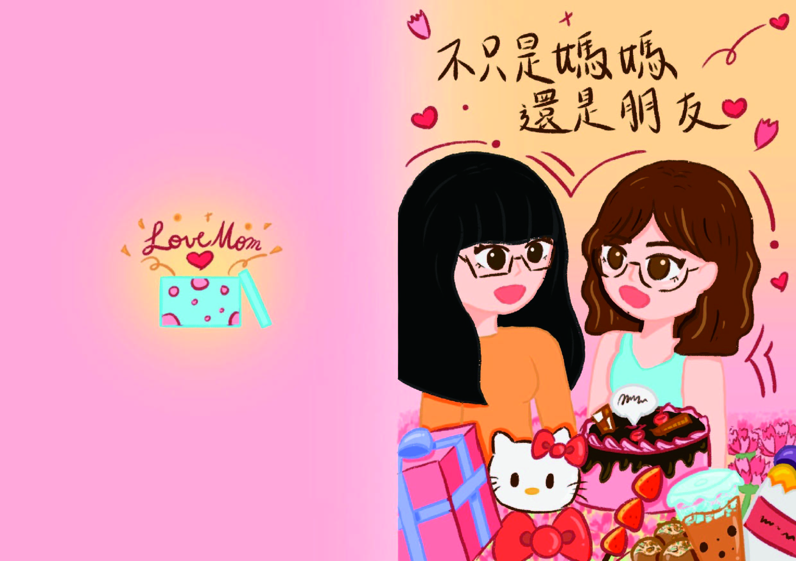
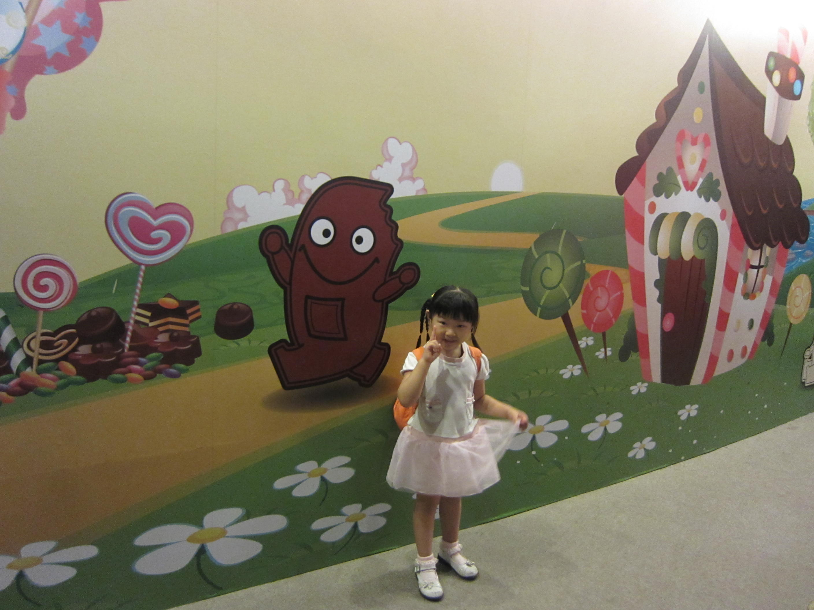
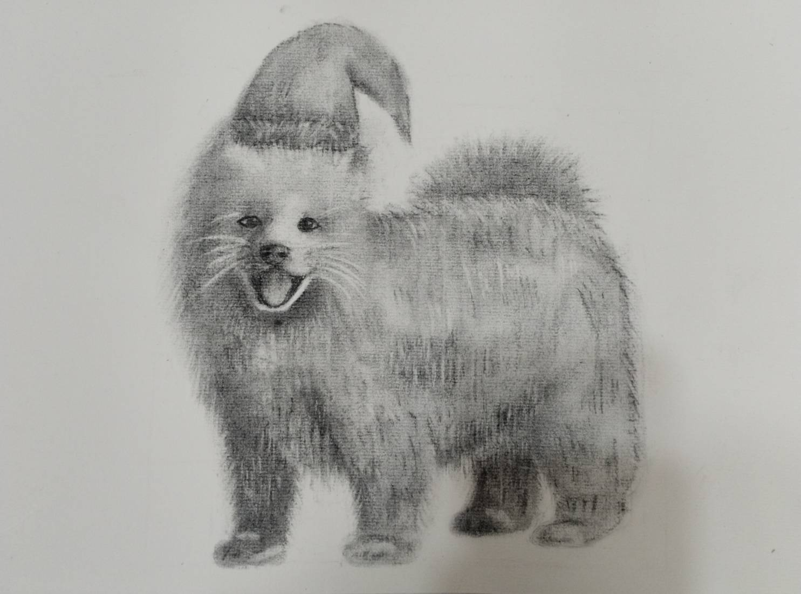
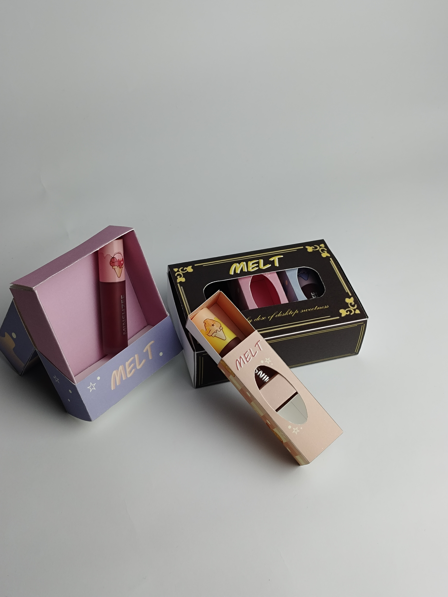

01 / GRAPHIC DESIGN
感恩卡片設計 Thank-you Card
以溫暖的粉色、手繪人物與甜點插畫，呈現想對朋友傳達的感謝與心意。
Hello, I'm a Designer.
一位就讀視覺傳達設計系商業設計組的學生，喜歡透過色彩、圖像與文字傳達想法，探索設計與生活之間的可能性。
我相信設計不只是視覺上的美感，更是一種傳遞理念、建立品牌形象與溝通訊息的方式。
歡迎來到我的個人作品集，一起認識我的設計理念與創作歷程。
看看我的作品
ABOUT ME
我目前就讀視覺傳達設計系商業設計組，主要學習視覺傳達、平面設計與商業設計相關知識。
在學習的過程中，我逐漸體會到設計不只是將畫面變得美觀，更重要的是透過清楚的視覺層次、適當的色彩搭配與有邏輯的版面配置，讓訊息能夠有效地傳達給觀者。
我對品牌形象、海報設計、排版與視覺風格的探索抱有興趣，也希望透過不同的創作練習，培養自己的觀察力、創造力與設計思考能力。
未來，我期許自己能持續累積設計經驗，建立獨特的個人風格，並將創意轉化為兼具美感與實用性的設計作品。
SELECTED WORK
每一件作品，都是一次想法的實踐，也是探索視覺表現與設計可能性的過程。
在這裡，我將整理自己於學習期間完成的設計作品，記錄從概念發想到視覺呈現的過程，並透過不同的設計形式，呈現自己對美感、溝通與創意的理解。

01 / GRAPHIC DESIGN
以溫暖的粉色、手繪人物與甜點插畫，呈現想對朋友傳達的感謝與心意。

02 / POSTER DESIGN
運用藍色調、樂器圖像與活潑字體，營造音樂主題的節奏感與視覺氛圍。

03 / BRAND IDENTITY
以綠色自然元素襯托中文標誌，透過色彩與構圖建立鮮明的主題形象。

04 / DRAWING
以炭筆觀察毛髮、明暗與輪廓，練習呈現動物的質感與神情。
.jpg)
05 / 3D INTERIOR DESIGN
以 3D 建模規劃書桌、層架與收納配置，並運用材質與光線呈現舒適實用的讀書空間。

06 / PACKAGING DESIGN
以粉彩色系與甜點意象設計彩妝外盒，讓包裝呈現甜美且一致的品牌風格。
每件作品都承載著不同的想法與嘗試，也記錄著我在設計學習上的累積與成長。
SKILLS
具備基礎的視覺編排概念，學習運用色彩、構圖、字體與圖像建立畫面的整體風格。
透過海報、編排與圖像設計練習，探索不同的視覺表現方式，培養資訊整理與視覺溝通能力。
學習從設計目的與受眾需求出發，思考如何透過視覺形象傳達品牌理念與產品特色。
持續學習與運用設計相關軟體，將創意概念轉化為實際的視覺作品，並探索數位媒體與網頁設計的應用。
DESIGN PHILOSOPHY
我認為好的設計，來自於對細節的觀察與對訊息的理解。
色彩能夠傳遞情緒，字體能夠塑造個性，而版面配置則影響著觀者接收資訊的方式。我希望透過這些視覺元素的整合，讓每一次創作都能兼顧美感、意義與溝通效果。
對我而言，設計是一段持續探索的過程。我期待在每一次的嘗試中累積經驗，找到屬於自己的視覺語言，並讓創意成為連結想法與生活的橋梁。